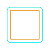
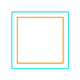
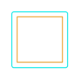
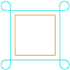
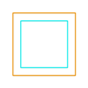
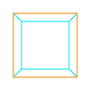
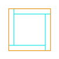

The following Cornering Parameters are available for all Profiling operations. You can control both External Corners and Interior Corners. You can also filter which corners these controls are applied to by specifying a corner angle range. Please be sure to read the notes below before using these parameters and perform cut material simulations to fully understand how they affect cutter movement.
|
 Dialog Box: Cornering Parameters tab, Profiling, 2 Axis |
The External Corner Type selected will be applied to all corners measured between the Minimum Angle and Maximum Angle values provided. Round (Default) This the default External Corner Type. The tool rolls around the sharp corner. Depending on the toolpath Tolerance, this method can cause rounding of the sharp corner. NOTE: This option must be used if your Control Geometry is not closed or is not a ploy-line!  Round Sharp This External Corner Type will force the tool to proceed past the corner vertex. When the tool diameter becomes tangent with the projected edge direction, it proceeds along the secondary edge.  Sharp Sharp Limited This External Corner Type will force the tool to proceed past the corner vertex by a specified Overshoot Length. If the Overshoot Length is specified as a distance less than the tool radius, a round is added at the corner. The radius of the round is equal to the tool radius minus the Overshoot Length. If the Overshoot Length is equal to or greater than the tool radius the Sharp Corner Type is used.  Sharp Limited Loop This External Corner Type will force the tool to proceed past the corner vertex by a specified Loop Radius before it proceeds tangent to the secondary edge. The radius is measured tangent to the secondary edge.  Loop |
Minimum Angle This is the Minimum Angle for corners to be considered for an External Corner Type. Corner angles below this value will use the default round method for external corners. Maximum Angle This is the Maximum Angle for corners to be considered for an External Corner Type. Corner angles above this value will use the default round method for external corners. |
The Internal Corner Type selected will be applied to all internal corners measured between the Minimum Angle and Maximum Angle values provided. Sharp (Default) This is the default Internal Corner Type. The tool will change directions when it meets the approaching edge. NOTE: This option must be used if your Control Geometry is not closed or is not a ploy-line!  Sharp Dog Bone In this Internal Corner Type, the tool will stop when it meets the approaching edge and then proceed directly to the corner vertex point. The tool will then reverse direction back to the previous point and proceed tangent with the approaching edge.  Dog Bone T-Bone In this Internal Corner Type, the tool will stop when its diameter meets the approaching edge and then continue tangent until it reaches the corner vertex. The tool will then reverse direction back to the previous point and proceed tangent with the approaching edge.  T-Bone |
Minimum Angle This is the Minimum Angle for corners to be considered for an Internal Corner Type. Corner angles below this value will use the default sharp method for internal corners. Maximum Angle This is the Maximum Angle for corners to be considered for an Internal Corner Type. Corner angles above this value will use the default sharp method for internal corners. |